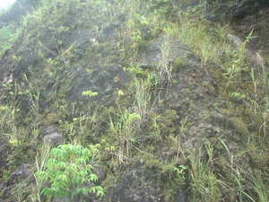
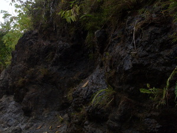
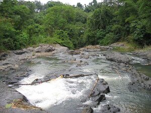

dalama   
/dalama/
n.
“stone_area”
1.
n.
a particular kind of stone of which certain cliffs are made
Eng. stone, type of; rock, type of
OCM: Topography and Geology (133)
DDP: Rock (1.2.2.2)
Online dict status: -
Usage level: M
n.
a cliff made of a particular type of stone
Wrd.Gloss: stone_area
Ka seini ne batu amana ne dakel wey selet se maangkag wey egmeitem ne amana egbaseyi te me kabuybuyahan su egkahiyen dan ne dayyuwan.
Due dalama diyè te kamet te uyang ku.
There is a cliff there at my brother-in-law's farm.
Cult. This kind of place is an important element of the traditional religion, believed to be the dwelling place of spirits (busew).
Eng. cliff; cliff face; rockface
OCM: Topography and Geology (133)
DDP: Mountain (1.2.1.1), Rock (1.2.2.2)
Online dict status: -
Usage level: M
Usage level: R
n.
(dalameen, -en) having a lot of cliffs of dalama rock (of an area)
Eng. cliffs, having many (of an area); rocky
Online dict status: -
Usage level: R
n.
(Dalameen, -en) the name of a particular place which has a lot of cliffs of dalama rock
Online dict status: -
Usage level: R
2.
n.
(taharalama, taha-) evil spirits (busew) that dwell among cliffs of dalama rock
Impilak a te taharalama su layun e man dè eggendiyè te dalama.
I was speared by a taharalama spirit because I always go to the rockface.
Eng. evil spirits living in cliffs; spirits living in cliffs (evil); demon living in cliffs
Ceb. ingkantu
DDP: Soul, spirit (3.1)
Online dict status: -
Usage level: R
Updated by: RJH,JLM,AAA,RJH,AAA,RUL,QDL,NJK,QDL,NJK
Last updated: 08/Dec/2009
This page last updated: 19/May/2012
Copyright © 2009-2010, Matigsalug Language Christian Association, Inc